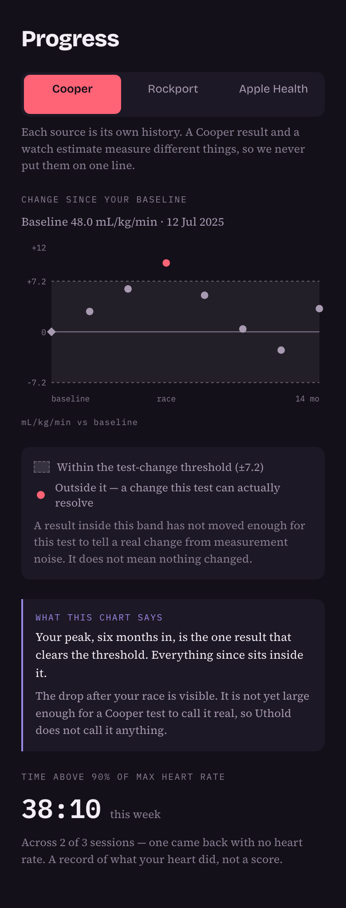
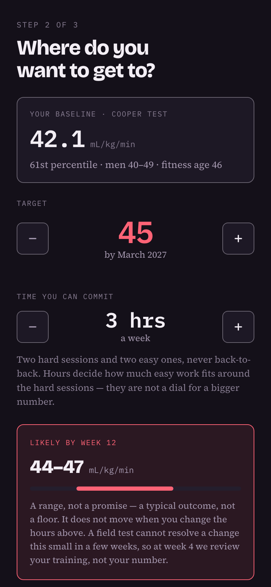
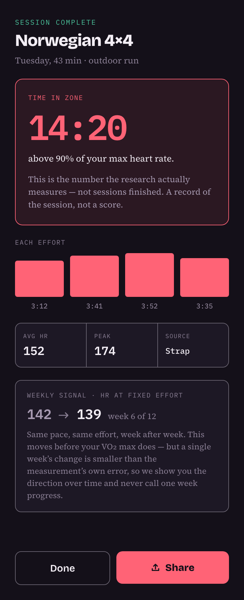
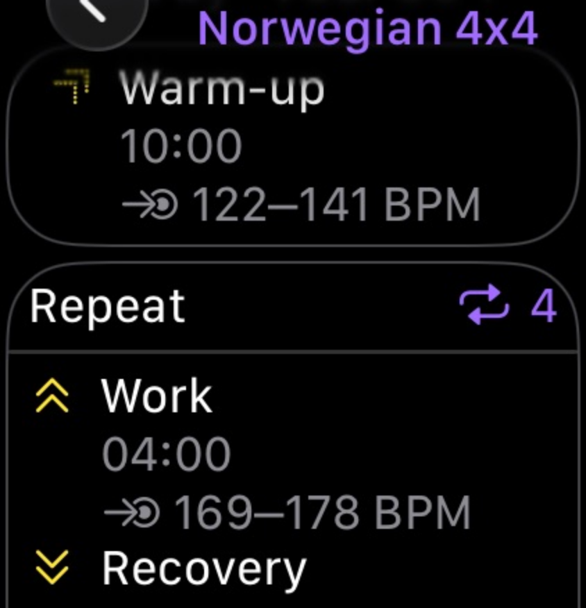

Free VO₂ max test · iOS training app in development
Your VO₂ max has a sawtooth. The trough is optional.
It climbs through a marathon build and slides back after the race, every cycle. Start with a free field test to find where you are now. The app that decides what you train each week — and what holds the number between races — is being built.
A 12-minute run or a 1-mile walk, outdoors. Free, no signup, and nothing you enter leaves your browser.
You run 40 miles a week. That isn’t what raises your VO₂ max.
It is the most counter-intuitive thing on this page, and it is why plenty of well-trained runners have a number lower than their training load suggests.
Volume, almost all of it easy
A marathon build accumulates enormous mileage and very little time near your ceiling. You can train seriously for months and barely touch the intensity that moves VO₂ max. More miles will not fix it — and nor will more hours, which is why we won’t sell you a bigger projection for committing more of them.
Minutes near your maximum
Uthold counts the minutes you spend above roughly 90% of your maximum heart rate. It builds the week to accumulate them, sends the targets to your watch, and measures what you actually got. That number is much harder to flatter than a weekly VO₂ max estimate.
We won’t tell you how many minutes is enough. Nobody has established a figure we would trust.
And then it comes back down. Every time.
Finish the race, drop the volume, and the number slides — then you build it again from lower than you left it. That cycle is the normal shape of a racing life, at 29 as much as at 59, and almost nothing on the market is built for the part between events.
You are not starting over
A real training history leaves a floor underneath you that a beginner doesn’t have. Coming back is a different problem from starting, and it deserves a different plan.
Cut the volume, not the intensity
This is the best-supported thing in our review — though it was measured in people cutting back, not people starting again. Cutting training volume by two thirds held VO₂ max for months. Cutting the intensity by a third did not. So what protects the number, once you are training again, is keeping the hard sessions genuinely hard while everything around them gets smaller. Coming back from a long lay-off is a different question, and Uthold starts you further back rather than assuming this applies on day one.

- The shaded band marks what the test cannot resolve
- Fourteen months, one full cycle, plotted as separate results rather than a curve. The shaded strip is the Cooper test’s change threshold: here only the peak clears it, and the whole post-race decline sits inside it — visible, but not large enough for the test to call real. So the app doesn’t call it anything: no verdict, no fitted slope, no predicted date you’ll be back.
Holding it is the goal, and it counts as one. Between races, staying where you are is a real result — and the only one nobody thinks to celebrate. What that takes, and where the evidence for it stops, is in the questions.
Choosing maintenance as a goal isn’t in the app yet. It’s on the list.The plan is easy. Changing it is the hard part.
Any app can hand you a session when you are fresh. Uthold reduces the load when your recovery signals say to, and tells you which signal made the call.
A plan that never answers back
Plenty of apps will hand you a twelve-week programme. Far fewer will tell you why this session and not another one, or do anything at all when you turn up wrecked on Thursday. A calendar that cannot change its mind is a list with dates on it.
A week, already decided
One goal, one time budget, one baseline. Uthold schedules the sessions, keeps hard days apart, aims each hard one at time above 90% of your maximum, and reduces the load when your recovery signals say to. You open it and train.
Test, set a goal, train the week you get.
Written training rules pick your sessions, not an AI. Each rule carries a grade for how strong its evidence is, unvalidated ones say so, and several are waiting on review by an exercise physiologist.
Get a baseline
Do the free field test in your browser — a 12-minute run or a 1-mile walk. No lab, no watch, no signup. You get an estimate, how it compares for your age and sex, and your fitness age.
Name a goal and your hours
Say what you want to reach and how long you can realistically train each week. Uthold answers with a projected range, never a promise, and tells you when a target is unlikely in the time you have. More hours buy you a fuller week, not a bigger projection.
Train the week you’re given
Sessions go to the watch you already own as structured workouts, through Apple WorkoutKit or Garmin, with targets on every interval. There is no second app to install on your wrist — the session is simply there in your workout list. Afterwards you see the thing that actually matters: time spent in the zone.
Your week, your session, your watch.
Dark because it gets read outdoors, mid-interval, at ninety-odd percent of your maximum heart rate.

- Today’s session, and the days around it
- Today’s session, and the days around it. Hard days are kept apart, and the week mixes long intervals with short ones.
- Rest is scheduled, not skipped
- Wednesday says “Rest — the adaptation happens here”. It is part of the plan, and missing it is not a streak you broke.
- Recovery can change the plan
- The panel reports whether your signals support the full load, in words as well as colour. When they don’t, the session gets smaller.
- Sends the session to your watch, targets and all
- “To Watch” sends the session as a structured workout through Apple WorkoutKit or the Garmin Training API — every interval, every recovery, and the heart-rate target for each one. Your watch counts them down and tells you when to go. You are not reading a plan off a phone and guessing.



- Warm-up, work and recovery, already on the watch
- That is Apple’s own Workout app, showing a session Uthold sent it: a ten-minute warm-up with its own heart-rate band, a work interval repeated four times, and the recovery between them. Your watch counts them down and tells you when to go.
- Targets come from your own maximum
- 169–178 is one runner’s range, worked out from their own maximum. The phone screen above shows 162–171, because that is a different person. Yours will be different again.
- No second app on your wrist
- Nothing extra to install or launch. The session is simply there in the workout list, which is why this works on the watch you already own.
Not a mockup — a real session on a real watch
Why this number, and what we won’t claim.
VO₂ max is how much oxygen your body can use at full effort. It is one of the better-studied markers of cardiorespiratory fitness, and unlike most numbers people track, it responds to training. Between races is also when it is easiest to let go — and, on the evidence below, when holding on to it takes the least training time.
Higher cardiorespiratory fitness is linked to lower rates of heart disease and early death across large populations. In the Norwegian HUNT study, each extra 3.5 mL/kg/min was associated with about 21% lower risk of cardiovascular death.
That is an association measured across a population. It is not a prediction about you, and nothing here diagnoses, treats or prevents any condition. We will not tell you that training adds years to your life, because that is not what the evidence supports.
It also does not climb forever. The gains are largest when you start furthest back, and they get smaller as you get fitter. A product promising a line that rises week after week is promising something that stops being true the moment you are actually fit.
Loe et al., PLOS ONE — HUNT 3 Fitness Study, used under CC BY.Uthold is being built now.
The field test is live today. The app is iOS first. Leave an email and you’ll hear when it opens — nothing else, and no more than that.